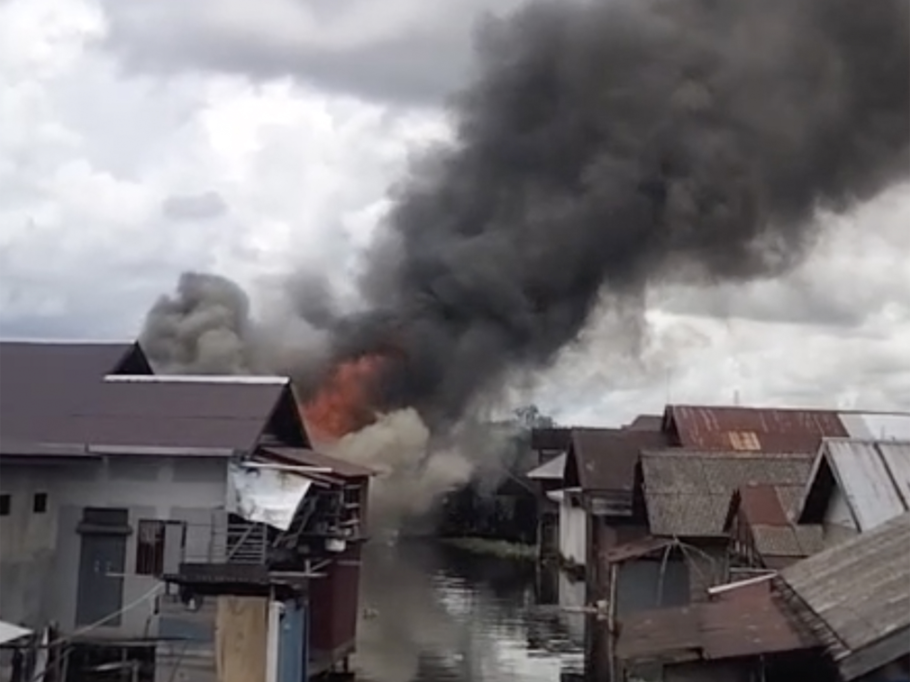

23 Februari 2026

Kebakaran terjadi di kawasan bantaran sungai Jalan Pemurus Dalam RT 36, Kecamatan Banjarmasin Selatan, Senin (23/2/2026) sekitar pukul 12.40 Wita. Peristiwa tersebut menghanguskan dua rumah yang berada tidak jauh dari gapura batas RT 37.
Satu rumah yang terbakar merupakan rumah bedakan milik Ibai, terdiri dari dua pintu. Salah satu pintu dihuni Marsiah (46) bersama tiga anaknya. Sementara satu pintu lainnya dihuni pasangan suami istri yang identitasnya belum diketahui.
Sementara itu, satu rumah lain yang turut terbakar diketahui milik almarhum Salim dan saat ini dihuni Misra, menantu atau anak dari Erhamna. Sekitar 80 persen bangunan rumah tersebut terbakar, terutama bagian atap dan interior rumah.
← Kembali ke Beranda